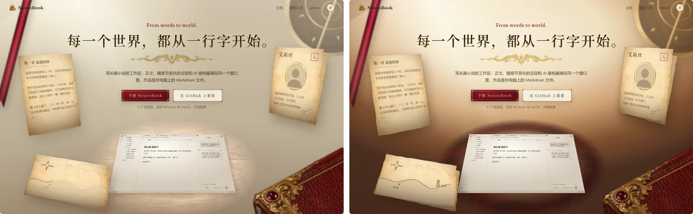
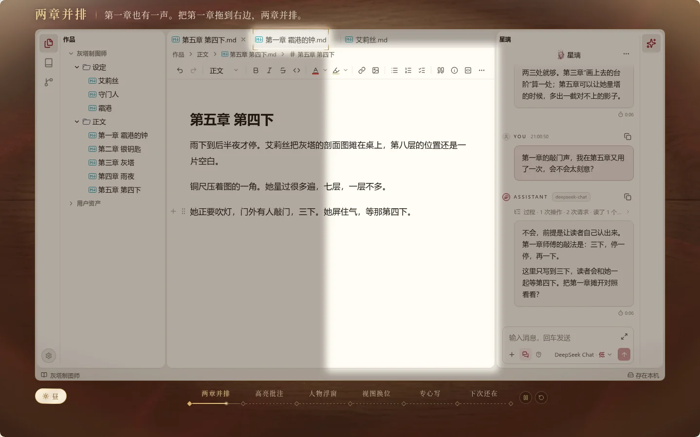

产品介绍首页：入殿·俯案成界（第 10 轮）
照第 9 轮的回答改：星盘与线索丝跟着“从字到世界”动起来，也接指针；白天重做成午后的藏书阁。高亮与首屏的指针效果按上一轮定下，没再动。第二幕（编辑器）起的脚本与原型放到下一轮。
星盘与线索丝，这回注意得到了吗？
左上：指针靠近星盘。右上：金尘落到地图以后，地图那根丝的光珠走向工作台。下：指针停在手稿上。都是定格，动起来的样子在 Lab 里看。
- 跟着“从字到世界”：每 5 秒走一步，星盘的网环就拨一格（先往回带一点，再顺转 18 度、冲过一点回来），铜环上同时扫过一道金光；外圈的刻度一直慢慢转，90 秒一圈。
- 这一步牵动哪张纸，那张纸的线索丝就亮一次：落墨、红笔是手稿那根，金尘落到地图、走完航线是地图那根，抽出星璃的便笺是人物卡那根。丝亮起来、变粗，一粒光珠 1.1 秒从纸走到工作台，到了落点漾开一圈。
- 指针靠近右上角的星盘：它对焦、变亮，横贯盘面的那根尺转向指针（最多偏 22 度）。停在导航的链接上时不对焦，免得垫在字后面。点一下星盘：拨一格，“从字到世界”直接跳到下一步，三根丝一起亮。
- 指针停在一张纸上：它那根丝往上绷起一点、亮起来，一小段光一趟趟往桌上走，另两根压暗；点开细看时那根也亮一次。
- 这些都要动起来才看得出，截图只是提示，请在 Lab 里停着看一圈，再试着靠近、点一下星盘。
白天这回华丽些了吗？

左：第 9 轮。右：这一轮。

白天的第一幕：四周是胡桃木，眉题与章节条换成浅色。
第 9 轮的白天为什么灰
- 灰的是墙：桌子以外是一层冷灰的石墙，整屏的明暗都挤在中间偏亮的一段，没有暗处托着，金边和星盘也被吃掉了。
- 橡木只铺在远处那张桌子下面，四周没有别的材质。
这一轮改了什么
- 墙：左上的窗光照在墙上，从顶上的暖象牙往下、往四角沉到深栗褐；顶上那一条留亮，导航的深色字还读得清。
- 桌面：橡木压成深暖的胡桃色（木纹还在），外圈露出酒红丝绒，融进下半屏的暗里；纸、书角的影子加深，花饰和星盘换成暖古金。
- 第一幕：工作台四周是胡桃木，眉题与章节条换成浅色的字与亮金；遮罩换成一层深暖褐。
- 只用了现有的素材（橡木与丝绒的照片）。@designer 估计这样能到七八成；再生成一张带包浆和细金嵌线的深胡桃木案，能到九成以上，要花一次图片额度。选“生成”我就去做，提示词照前几轮登记。
顺手修的
第一幕“视图换位”那一拍：拖作品的入口去右侧轨时，指针路过星璃那一栏的顶边会先预览成“在它上面拆一组”，再换成搬到右栏（帧率越正常越容易出现）。改成后半段在右侧轨里由下往上走，路上不再先排成别的样子。
已定
- 首页给搜索进来的人，做得像产品介绍；书庭这类页面另做、自由发挥（2026-11-26）
- 截图尽量少：直接把工作台复原，让人体验到拖动、分屏与布局动画的丝滑（第 1 轮）
- 第一屏把介绍说明白，同时要有高级精美的动画，让人想往下滚；往下滚进入滚动动画（第 1 轮）
- 基调取 w00050 t06 契约仪式页的史诗、神圣、西幻气氛，不复制；现有的 NovelAI 场景图不直接用（2026-11-26）
- 要讲的功能：写作与编辑器、世界引擎、剧情（在做）、星璃与 Agent、本地与开源、插件与 SDK、桌面版、模型自选；llmlint 不列（2026-11-26）
- 先做方向一《入殿·俯案成界》；材质可以用生成的贴图，首页可以用星璃的立绘与贴纸（2026-11-26）
- 首屏方向不变、先打磨材质；按钮加金边一类的装饰，往皇室奢华感走；工作台缺省夜间配色、可以切换（第 4 轮）
- 第一幕放慢讲清楚，加回浮窗、视图换位置、关掉再打开，和首屏一样华丽（第 4 轮与会话）
- 首句用 e3“每一个世界，都从一行字开始。”，配 From words to world.（第 4 轮与会话）
- 演示的拖动用实时布局；访客动过要有恢复动画；顺手介绍编辑器的标注与高亮；整个页面要有白天；首屏静中有动、纸条可以轮播；按钮出几版（第 5 轮之后的会话）
- 第一幕不用访客滚动：落地以后自动连播，访客愿意就停着看；拖动不要上下左右中的落点分区；首屏的动静要快一些、大一些、更高级（第 6 轮之后的会话）
- 第一幕这样连播可以；章节条用古籍标尺；首屏“从字到世界”与指针响应都要，旁边的东西要能点、点了稍放大，要有跟鼠标位置、速度互动的动画；按钮用皮面烫金；白天要再改；虚拟指针压到菜单之上、拖动快些走弧线、字幕换显眼的地方、重点加遮罩（第 7 轮）
- 字幕放在工作台正上方；重点用遮罩，但高亮要做得好看；首屏能点能动手的几处可以，指针效果要更明显、更好看，考虑多加点元素；白天的桌面换成生成的旧橡木（第 8 轮）
- 高亮用鎏金标记；首屏的提灯与金丝可以；星盘与线索丝都留，但要有看得见的动画与交互；白天要更华丽，不能只有一张桌、其余灰蒙蒙（第 9 轮）